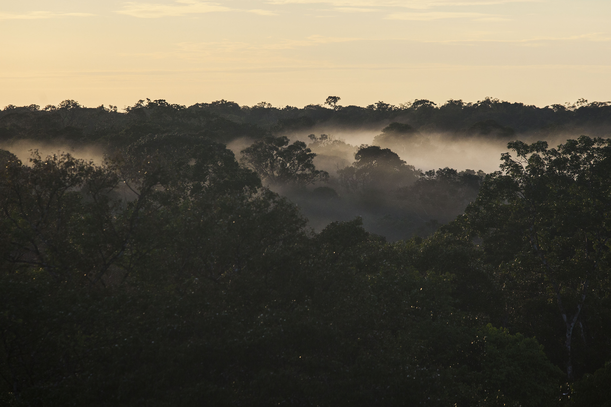

Climate change and rising CO2 in Amazonia
Rapid changes in the Earth’s climate caused by burning of fossil fuels and deforestation pose a severe threat to the forests of the Amazon basin. Warmer temperatures and drier conditions are predicted to cause widespread forest dieback, which would threaten the region’s economy, social welfare, and natural capital through changes, for example, in agricultural output and hydropower supply. The implications are global: Amazon forests regulate the climate through the cycling of carbon, water, and energy; they also harbor a large fraction of the world’s biodiversity and provide substantial services to all humankind. The impact of climate change in tropical ecosystems, however, is highly uncertain. Reducing this uncertainty is critical to steering future development policies for the Amazon region, as well as global assessments of ecosystem vulnerability to climate change.
The AmazonFACE program is directed toward resolving a key source of uncertainty: the potential for rising atmospheric CO2 concentrations — which happens to be the proximate cause of climate change — to buffer tropical forests against the deleterious effects of climate change by stimulating forest growth and resilience to drought. The existence, magnitude and duration of this supposed CO2 fertilization effect in tropical forests remain largely undetermined, despite its potentially great importance for the global carbon cycle. A Free-Air CO2 Enrichment (FACE) experiment is the most direct and robust scientific approach for reducing this uncertainty. No such experiment has ever been attempted in a tropical forest, despite the long- standing recognition in science and policy communities of the need for such an experiment.
